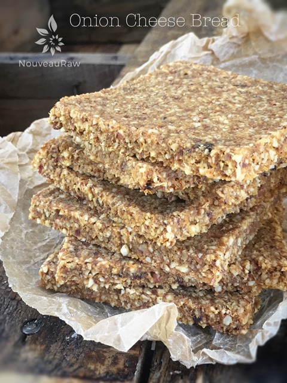
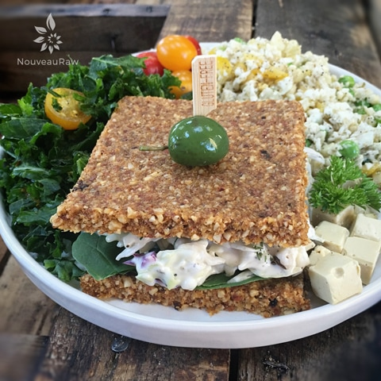
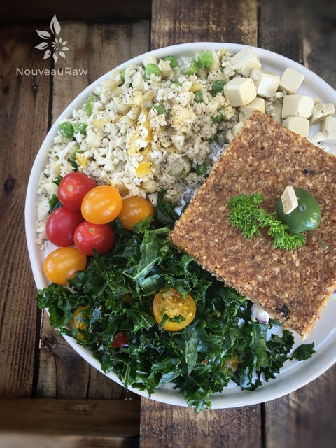

Onion Cheese Bread

raw / vegan / gluten-free
To say that I enjoy these raw breads is an understatement. I LOVE them! I was always one of those who could live on bread alone. It didn’t matter what form, shape, or flavor it came in… I ate it; I loved it.
But over four years ago, I stopped eating gluten. I went cold-turkey overnight and let me tell you; it wasn’t easy. Throughout this process, I even stayed clear of processed breads that are labeled gluten-free.
Why? Well, in my discoveries, just because something is gluten-free, it doesn’t mean that it is any healthier for you. Plus, by eating substitutes as I was trying to wean myself away from gluten, I felt it only kept my cravings for the real deal.
Bread products were an addiction for me. Now, I am a recovering Bread-O-Holic! With this four-year buffer, I now find that I can behave myself if left alone in the same room with a loaf of fresh-baked bread! I never lost the battle, but we both have walked out a bit buttered er battered!
This bread recipe is dense and has a full-bodied flavor. You can slice it as thin or as thick as you desire. You can shape it into a loaf, or spread it flat. Knead it, beat it, spank it and rub a little love into it! “Roll it, pat it, mark it with a B, Put it in the dehydrator just for me.”
I couldn’t wait to create a sandwich with this bread. I created a coleslaw filling for it. I mixed some of my Onion Dill & Horseradish Cream Sauce with shredded cabbage and carrots and piled it high between two pieces of bread. Oh, and I added some arugula. I then served it up with my Cumin Kale Salad and my Springtime “Rice” Salad. It hit the spot perfectly. I hope you enjoy this recipe. Many blessings, amie sue
Yields 1 loaf
Preparation:
- Place the almonds into the food processor and chop until they reach a very small nugget size. Be careful that you don’t over-process. You don’t want the almonds to release too much oil. Remove from food processor and place in a separate bowl.
- No need to wash the food processor bowl – add the onion, garlic, sun-dried tomatoes, water, and salt. Process until everything is well combined and broken down.
- Add in the almonds, flax meal, psyllium husks, and nutritional yeast. Process until everything is well combined.
- If the mixture is too dry, add water no more than 2 Tbsp at a time. You want the batter to stick together when you pinch it.
Shaping the bread loaf style:
- Remove the dough and form a bread loaf with your hands.
- Using a sharp knife cut shallow indentations, creating score marks to the size of bread slices that you want in the end.
- Brush the top with some olive oil and then sprinkle on dried onion flakes, if desired.
- Set the dehydrator to 145 degrees (F) and place the bread on the mesh sheet that comes with your dehydrator. Dry at this temperature for 1 hour to create the crust. Set a timer, so you don’t forget!
- Remove the bread from the dehydrator and slice the bread into the desired thicknesses. Lay them flat on the mesh sheet that comes with your dehydrator.
- Reduce the heat to 115 degrees (F) and continue drying for 6-10 hours. Keep an eye on them and remove them when you find the perfect level of moistness for you.
Shaping the bread flat:
- Spread the bread dough flat on a non-stick sheet that comes with the dehydrator, roughly 1/4″ thick, and score it into sandwich bread sizes. That is what I did this time.
- Dehydrate at 145 degrees (F) for 1 hour, then reduce to 115 degrees (F) for 8+ hours.
- The dry time will vary depending on how moist you want the bread, what the climate is in the area that you live, and how full the machine is.
- Keep an eye on it, so it doesn’t dry out.
- Partway through the dry time, flip the bread over onto the mesh sheet that comes with the machine. This will help the air to better circulate around the bread.
- Shelf life and storage: My recommendation would be to store this bread in an air-tight container, in the fridge, for 3-5 days.
- The more moisture that is left in your bread, the shorter the shelf life.
- Therefore, shelf life will vary with your drying technique. Whenever I make this bread, it never lasts very long enough to spoil.
- Keep in mind, the whole purpose of eating a raw diet is to eat foods at their peak of freshness, so don’t expect this bread to have an extended expiration date.
The Institute of Culinary Ingredients™
- What is Himalayan pink salt, and does it matter? Click (here) to read more about it.
- How does psyllium work in a recipe? Learn more (here).
Culinary Explanations:
- Why do I start the dehydrator at 145 degrees (F)? Click (here) to learn the reason behind this.
- When working with fresh ingredients, it is essential to taste test as you build a recipe. Learn why (here).
- Don’t own a dehydrator? Learn how to use your oven (here). I do, however honestly believe that it is a worthwhile investment. Click (here) to learn what I use.

Just pulled it out of the dehydrator. Ready to build that sandwich!



© AmieSue.com